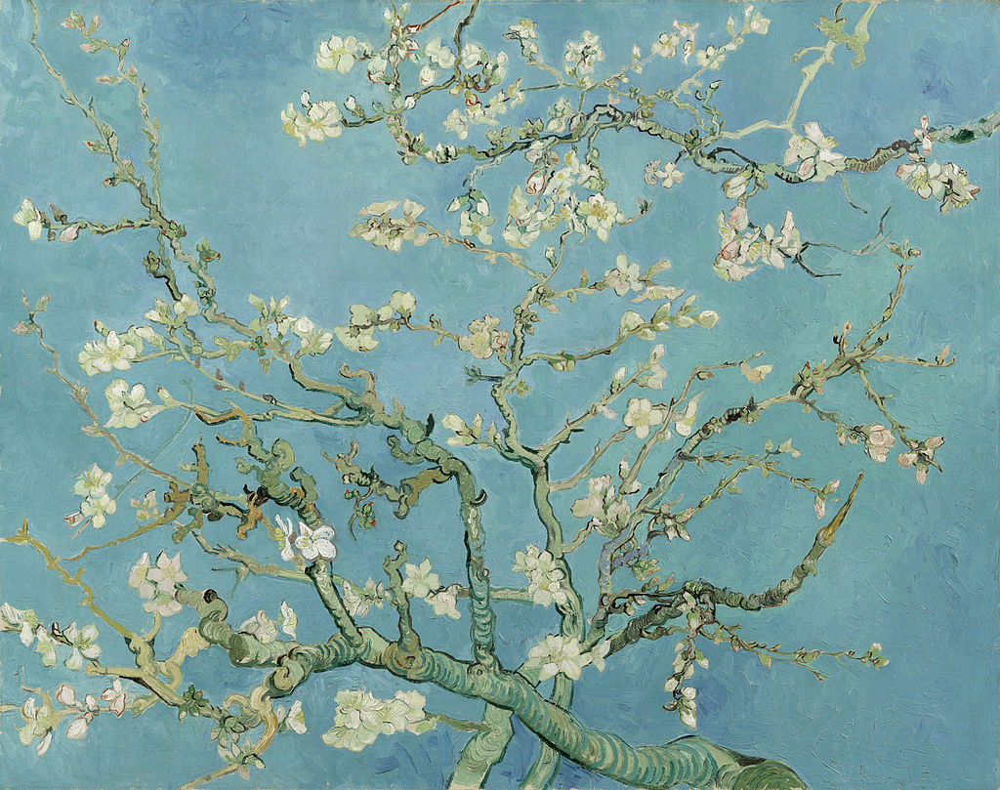

<head>
<meta charset="UTF-8" />
<meta name="keywords" content="drawing, painting" />
<meta name="description" content="drawings by Sunjy" />
<title>Sunjy</title>
<link rel="shortcut icon" type="image/x-icon" href="../../mImages/mCommon/favicon.ico" media="screen" />
<link rel="stylesheet" type="text/css" href="../../mCsses/mCommon/mCssA.css" />
<link rel="stylesheet" type="text/css" href="../../mCsses/mCommon/mCssB.css" />
<link rel="stylesheet" type="text/css" href="../../mCsses/mCommon/mCssC.css" />
<link rel="stylesheet" type="text/css" href="../../mCsses/mCommon/mCssD.css" />
<link rel="stylesheet" type="text/css" href="../../mCsses/mContent/mCssA.css" />
<link rel="stylesheet" type="text/css" href="../../mCsses/mContent/mCssB.css" />
<link rel="stylesheet" type="text/css" href="../../mCsses/mContent/mCssC.css" />
<link rel="stylesheet" type="text/css" href="../../mCsses/mContent/mCssD.css" />
</head>
<script type="text/javascript" src="../../mScripts/mContent/mContentAA.js" /></script>
<script type="text/javascript" src="../../mScripts/mContent/mContentAB.js" /></script>
<script type="text/javascript" src="../../mScripts/mContent/mContentAC.js" /></script>
<script type="text/javascript" src="../../mScripts/mContent/mContentAD.js" /></script>
<script type="text/javascript"></script> 
<script type="text/javascript">
document.write('<div class="mImgAbsolute"></div>');
/*
document.write('<p class="mFontSizeBColor" />From a white paper...</p>');
document.write('<table class="center"><tr><td>');
document.write('');
document.write('</td></tr></table>');
*/
</script>


<script type="text/javascript">
document.write('<p class="mFontSizeBColor" />Almond Blossoms</p>');
document.write('<p class="mFontSizeSColor" />By Vincent van Gogh. “Almond Blossoms” is a composition that is unlike any other in Van Gogh’s paintings. The branches of the almond tree seem to float against the blue sky and fill the composition.<br><br>This cropped view of the almond branches with dark lines outlines brings to mind the whole almond tree. Van Gogh, much admired this quality in Japanese floral studies in which they depict a portion of the flowering in space, seemed to represent the whole.<br><br>Van Gogh used the term Japonaiserie to express this influence. He had collected hundreds of Japanese prints, and Van Gogh integrated some of the technical aspects of ukiyo-e into his work.<br><br>The Japanese prints represented Van Gogh’s search for serenity, which he describes in a letter to his sister:<br><br>“Having as much of this serenity as possible, even though one knows little – nothing – for certain, is perhaps a better remedy for all diseases than all the things that are sold at the chemist’s shop.”<br><br>This painting’s bright color is reflective of the pictures he made in Arles and the transformational influence that Van Gogh had on the still life genre. These works reflect the impact of Impressionism and Japanese woodcuts.<br><br>The Almond Blossoms series is a group of several paintings made in 1888 and 1890 by Vincent van Gogh in Arles and Saint-Rémy, southern France of blossoming almond trees.<br><br>Flowering trees were special to van Gogh; they represented awakening and hope. He enjoyed them aesthetically and found joy in painting flowering trees.<br><br>The flowering trees seemed to awaken van Gogh into a state of specific direction, hyper-activity, and good cheer. He wrote:<br><br>“I am up to my ears in work for the trees are in blossom, and I want to paint a Provençal orchard of astonishing gaiety.” <br><br>When van Gogh arrived in Arles in 1888, fruit trees in the orchards were about to bloom. The blossoms of the apricot, peach, and plum trees inspired him. He created numerous paintings of blossoming fruit trees. He wrote to Theo that he:<br><br>“will have to seek something new, now the orchards have almost finished blossoming.”<br><br>He was invigorated again, and this painting was explicitly gifted to celebrate the birth of his nephew and namesake, the son of his brother Theo and his sister-in-law Jo.<br><br>The painting was presented as a gift for his brother Theo and his wife Jo after Van Gogh received a letter in which Theo shared the good news:<br><br>“As we told you, we name him after you, and I wish he would be as tenacious and as courageous as you are.” <br><br>This painting has remained the most cherished of his works for the Van Gogh family.</p>');
document.write('<table class="center" /><tr><td>');
document.write('<br>This cropped view of the almond branches with dark lines outlines brings to mind the whole almond tree. Van Gogh, much admired this quality in Japanese floral studies in which they depict a portion of the flowering in space, seemed to represent the whole.<br><br>Van Gogh used the term Japonaiserie to express this influence. He had collected hundreds of Japanese prints, and Van Gogh integrated some of the technical aspects of ukiyo-e into his work.<br><br>The Japanese prints represented Van Gogh’s search for serenity, which he describes in a letter to his sister:<br><br>“Having as much of this serenity as possible, even though one knows little – nothing – for certain, is perhaps a better remedy for all diseases than all the things that are sold at the chemist’s shop.”<br><br>This painting’s bright color is reflective of the pictures he made in Arles and the transformational influence that Van Gogh had on the still life genre. These works reflect the impact of Impressionism and Japanese woodcuts.<br><br>The Almond Blossoms series is a group of several paintings made in 1888 and 1890 by Vincent van Gogh in Arles and Saint-Rémy, southern France of blossoming almond trees.<br><br>Flowering trees were special to van Gogh; they represented awakening and hope. He enjoyed them aesthetically and found joy in painting flowering trees.<br><br>The flowering trees seemed to awaken van Gogh into a state of specific direction, hyper-activity, and good cheer. He wrote:<br><br>“I am up to my ears in work for the trees are in blossom, and I want to paint a Provençal orchard of astonishing gaiety.” <br><br>When van Gogh arrived in Arles in 1888, fruit trees in the orchards were about to bloom. The blossoms of the apricot, peach, and plum trees inspired him. He created numerous paintings of blossoming fruit trees. He wrote to Theo that he:<br><br>“will have to seek something new, now the orchards have almost finished blossoming.”<br><br>He was invigorated again, and this painting was explicitly gifted to celebrate the birth of his nephew and namesake, the son of his brother Theo and his sister-in-law Jo.<br><br>The painting was presented as a gift for his brother Theo and his wife Jo after Van Gogh received a letter in which Theo shared the good news:<br><br>“As we told you, we name him after you, and I wish he would be as tenacious and as courageous as you are.” <br><br>This painting has remained the most cherished of his works for the Van Gogh family." />');
document.write('</td></tr></table>');
</script>


